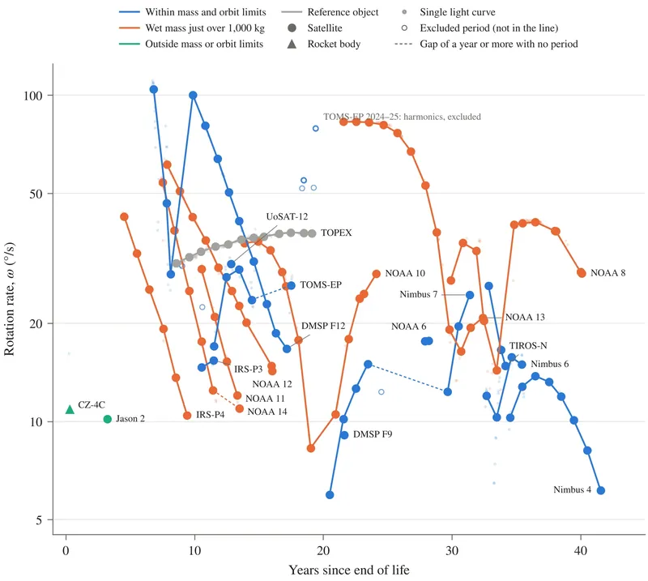
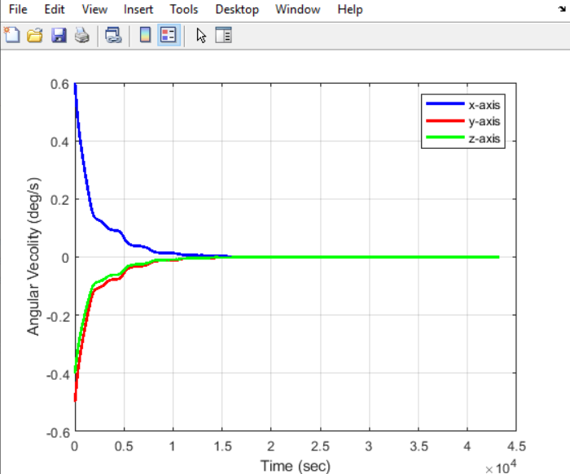
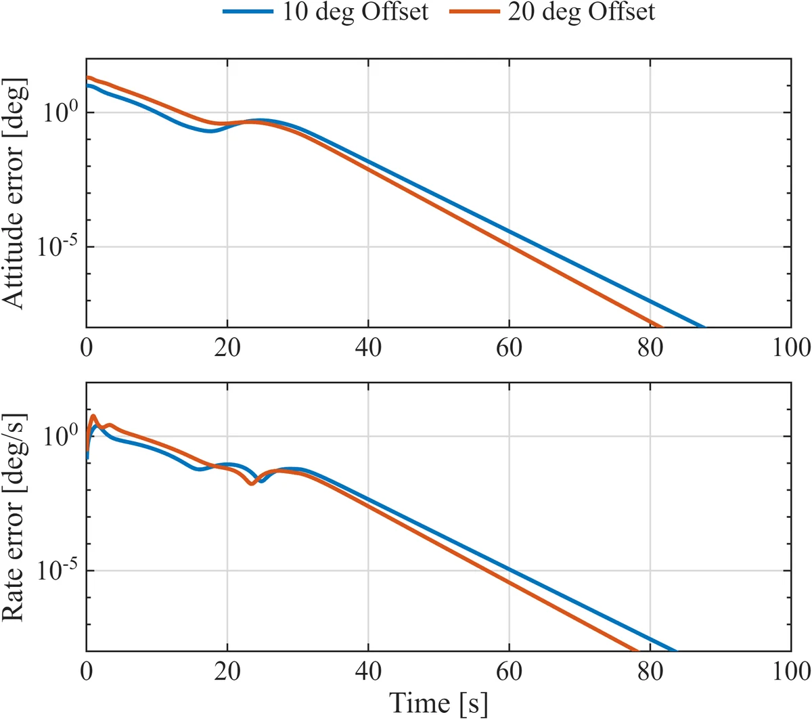
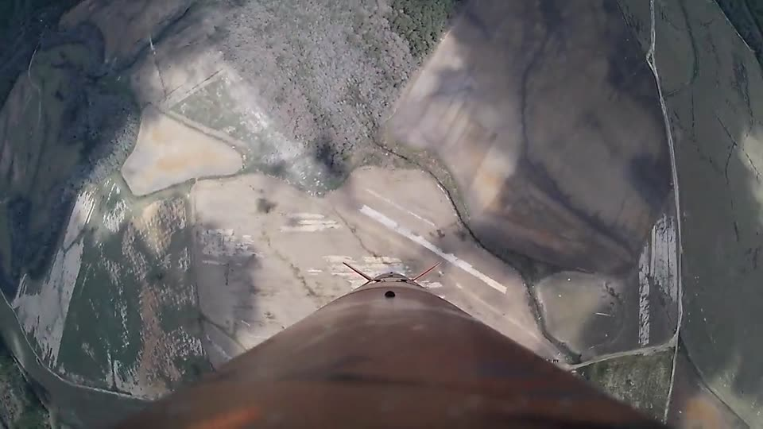
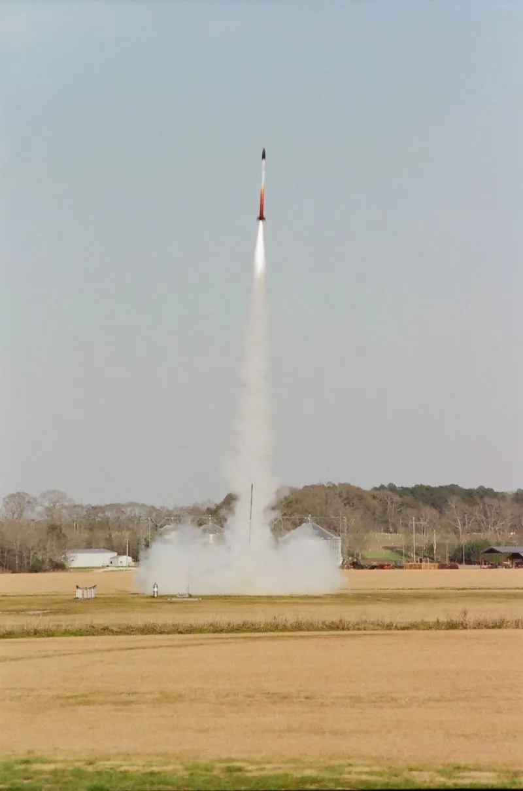
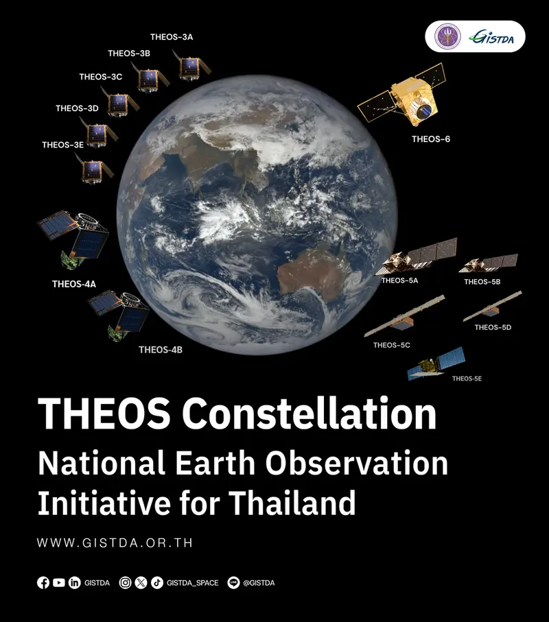

Projects
Everything in one place. Each card opens a page with the approach, results, figures, and links to papers and code.
-
HCMG momentum management using magnetorquers
A 12U CubeSat simulation that slews with a hybrid CMG array, then uses magnetorquers to desaturate its flywheels during fine pointing.
2026 to 2027
-
Figure to be added
CLF-MCBF for safe HCMG mode switching
Matrix-valued control barrier functions that keep a hybrid CMG array nonsingular while its gimbals lock and unlock.
2026 to 2027
-

HARMONIA: unified docking and debris-capture architecture
Rotation rates and grapple geometry for 44 defunct LEO satellites, plus rendezvous analysis supporting a PhD dissertation.
Fall 2026
-
CBF safety control for nonholonomic robots
Look-ahead control barrier functions that let a safety filter steer, not just brake, a differential-drive robot near walls.
Summer 2026
-

KNACKSAT-3: attitude determination and detumbling
TRIAD attitude determination and a B-dot detumbling simulation used to tune magnetorquer gains for a 1U CubeSat.
Summer 2024
-

Adaptive Attitude Tracking of a CMG-Actuated Spacecraft with Unknown Inertia
An adaptive controller for a four-CMG spacecraft with unknown inertia, with a Lyapunov proof of asymptotic tracking.
Fall 2026
-
Lunar hopper trajectory optimization and navigation
Minimum-wet-mass trajectory optimization at the lunar south pole using Hermite–Simpson collocation, CasADi and IPOPT, plus a custom inertial navigation system validated using an error-state EKF.
Fall 2026
-

Apogee control airbrake for Project TerraGator
A cam-slot airbrake with Kalman-filter navigation and PID control that put three flights within 20 ft of target apogee.
2025 to 2026
-

Payload flight software for Project Communigator
Embedded flight computer that logs, filters and transmits payload telemetry for the 2025 NASA Student Launch competition.
2024 to 2025
-

THEOS-3A structural analysis
Meshing, modal analysis and quasi-static load analysis of the primary structure of Thailand's THEOS-3A satellite.
Summer 2025